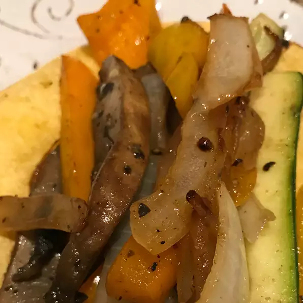

Fajitas

Description
Fajitas full of vegetables! This recipe was copied from AllRecipes.com as part of my first project for the Odin Project. You can find the original recipe here.
Ingredients
- 8 (8 inch) flour tortillas
- 2 tablespoons vegetable oil
- 1 red onion, thinly sliced
- 1 green bell pepper, seeded and sliced into strips
- 1 red bell pepper, seeded and sliced into strips
- 1 teaspoon minced garlic
- 1 yellow squash, halved and sliced into strips
- ½ cup salsa
- 1 teaspoon ground cumin
- ½ teaspoon salt
- 1 cup shredded vegan cheese
Steps
- Wrap tortillas in aluminum foil, and place in oven. Turn heat to 350 degrees F (175 degrees C). Bake for 15 minutes, or until thoroughly heated.
- In a 10 inch skillet, heat oil over medium high heat. Add onions, red and green peppers, and garlic; stir to coat with oil. Cover, reduce heat to medium, and cook for 5 minutes. Stir squash into vegetables. Stir in salsa, cumin, and salt. Cover, and cook for 5 minutes.
- Spoon vegetable mixture evenly down the centers of warm tortillas, and sprinkle with cheese and cilantro. Roll up tortillas, and serve.
Nutritional Information
531 calories; protein 17.6g; carbohydrates 64.7g; fat 22.8g; cholesterol 25.1mg; sodium 1111.3mg